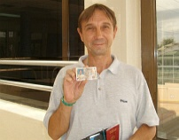
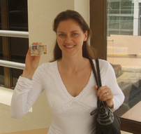

ПМЖ
Вот и подошла к своему завершению наша эпопея с получением ПМЖ в Доминикане. Уже тысячи наших соотечественников прошли эту непростую процедуру, ещё многим тысячам предстоит её пройти. У каждого это происходило по-разному, и моя заметка - вовсе не пример того, как это происходит здесь, а только описание нашего случая. В январе 2008 года мы получили ВНЖ. И вот наступает март - можно подавать документы на постоянную резиденцию. Весь процесс - полностью идентичный первому. Не мудрствуя лукаво, снова обращаемся к своему адвокату, считая её надёжным и порядочным человеком. Она нам называет цену в 45.000 песо (около 1400$) на двоих, плюс мы оплачиваем медкомиссию (около 200$). Итого: 1600$ на меня и жену. При средней стоимости у других адвокатов в 1200$ на одного - то, согласитесь, экономия существенная. ( И дело не в нашей скупости, а в том, что мы совсем не богатые люди...)

И вот пройдена медкомиссия, по просьбе адвоката мы вручаем ей сразу всю сумму, (она предупредила, что на этот раз оформление может затянуться до 6-ти месяцев); но нам торопиться некуда и мы спокойно настраиваемся на полгода ожидания...
Полгода пролетели незаметно. Решаем позвонить ей, поинтересоваться, как идут дела. В ответ слышим: неожиданно подвернулась оказия поработать в Штатах, поэтому я сейчас там, но вы не волнуйтесь, всё под контролем, я скоро вернусь и всё будет в порядке! Особой тревоги это сообщение у нас не вызвало, в конце концов плюс минус пару месяцев погоды не сделают.
Прошло ещё четыре месяца...
И тут начались странности - при каждом звонке ей, мы слышали в трубку:"...ой, я сейчас за рулём, (на совещании, на деловой встрече, в туалете) - я перезвоню!" Но звонка не было. Выждав недельку, мы звонили снова сами - и слышали то же самое! Я тупо начал названивать ей каждый день, но она стала просто нажимать кнопку "Отбой" на своём телефоне... Мы оказались в западне - отданы деньги, документы - и мы ничего не можем изменить. Ради сохранения рассудка надо было просто не думать об этом.
Наступил март 2009 года, то есть прошёл год с момента подачи документов. И вот, (о Чудо!), при очередной попытке дозвониться до неё - она снимает трубку и после обязательных в Доминикане "Mi Amor como tu estas?" заявляет: а почему вы до сих пор не сдали резиденции в Миграсьон? От такой дерзости у меня пропадает дар речи - так кто из нас адвокат, кто получает деньги, и кто это должен делать и почему она несколько месяцев бросает трубку?!!
-Ладно, говорит она невозмутимым голосом, везите резиденции моей дочке, она передаст их другому адвокату, и тот попробует (?!!) сдать их сам. Жена горит желанием крикнуть ей в трубку нехорошее слово, я пытаюсь её успокоить, говорю, что у нас просто нет иного выхода, так как документы у неё и надо только ждать, когда это всё закончится...
Проходит ещё месяц. Снова звоним ей - и очередная новость: ребята, вы так долго возились с документами (?!!), что истёк срок годности вашей медкомиссии, и вам надо пройти её повторно! Деваться некуда, платим 200$, проходим мед.экзамен, отвозим справки дочке...
И вот наступает сентябрь. Звонит дочка адвоката и говорит: можете забрать свои документы. Неужели? Приезжаем, и она отдаёт нам наши свидетельства о рождении, о браке, паспорта. Слава Богу, хоть это вернулось нам! Но как же ПМЖ? Подождите, я вам позвоню...

Говорю жене: давай радоваться хотя бы тому, что наши документы целы и у нас на руках. А уж всё остальное - не так уж и важно... Если и решила адвокат обмануть нас таким способом - то пусть это будет на её совести...Но вчера прозвенел телефон и дочка сказала, что можно получать ПМЖ.
Мы поехали в Миграсьон, там узнали, что карточка резиденции стоит 3.500 песо, плюс 500 песо пеня за каждый месяц со дня депозита резиденции. Итого на двоих надо заплатить ещё 13.000 песо и нам назначат дату получения - 6 октября. (Но, если мы хотим получить резиденцию прямо сегодня, то заплатить надо 17.000 песо).
Мы не захотели сегодня...
Заплатили деньги и уехали домой. Приедем в октябре. Теперь уже спешить некуда...
Вот такая обыкновенная история. Я даже не обвиняю нашего адвоката - она обычная доминиканка и поспешность не в их крови. Да и конечный результат-то положительный! А то, что это стоило нам всё-равно тех же двух с лишним тысяч долларов и 18-ти месяцев ожидания в нервотрёпке и стрессах - так это уже мелочи...
Так что если у вас есть деньги, ( а кто, кроме нас, безумцев, приехал сюда без денег?) - то не пытайтесь сэкономить пару сотен! Лучше воспользуйтесь услугами тех, кто на самом деле делает документы без лишней головной боли, кто имеет хорошую репутацию и большой опыт в таких делах. Поверьте, психическое здоровье стоит дороже денег! Да и экономия, как в нашем случае, может оказаться совсем не экономной...
Всем успешного получения вида на жительство!
UPD от 10.11.2011
Вот теперь с полной уверенностью могу рекомендовать надёжного и порядочного русскоязычного адвоката, который сделает вам ВНЖ, ПМЖ, гражданство, доминиканские права - без проблем и нервотрёпок!РАСЦЕНКИ РУССКОЯЗЫЧНОГО АДВОКАТА.
UPD от 09.10.09
6 октября съездили в Миграсьон, через час ожидания были приглашены для фотографирования на резиденцию, и ещё через час всё было готово. Поехали в Хунту, ( кстати, сейчас отдел для иностранцев размещается в новом здании, метров 300 ниже по Луперону, и нет никакой вывески!). Народу почти не было, присутствовала лишь пара китайцев и один гаитянец. Уплатили в кассу по 1200 песо на каждого, сфотографировались, сдали отпечатки пальцев - и получили новые седулы.
Уф!
Можно перевести дух. История с документами позади...
Теперь можно обменять российские права на доминиканские, можно, наконец, легально приобрести пистолет, можно въезжать и выезжать из страны, не платя никаких туристических сборов, пользоваться всеми правами местного населения, за исключением права голосовать на выборах.
( А может замахнуться ещё и на гражданство?!!)
UPD от 10.12.10
А вот и началось повышение цен на иммиграцию в Доминикану.
UPD от 10.10.11
Быстро пролетело два года и вот мы уже и резиденцию (ПМЖ) продлеваем.
UPD от 17.09.11
Как мы знаем, иностранец, подававший в Доминикане документы для получения вида на жительство, получает на руки два документа: карточку cedula (седула) ( удостоверение личности, аналог внутреннего паспорта) и карточку residencia (резиденсия) – суть само разрешение на проживание, в обиходе ПМЖ. Седула выдаётся сроком на 5 лет и подлежит замене ко дню рождения истекающего года, а резиденция, несмотря на то, что является постоянной, должна обновляться каждые два года. Желательно менять её до окончания срока действия, иначе в силу вступают штрафные санкции в размере 500 песо за каждый не продлённый месяц.
Мы прожили два года с нашими постоянными резиденциями, действие которых истекало в октябре. Решили съездить на обновление пораньше, и в сентябре отправились в столицу, в DGM ( Direccion General de Migracion).
Никуда не торопились, приехали туда к 10 часам утра, с удивлением отметили, что никакой очереди в окно №10 не было. Сказали служащей за окном, что хотим делать renovacion ( обновление), она выдала нам по анкете ( надо оплатить 100 песо за каждую), которые надо заполнить и вернуть ей. Уходит 5 минут на заполнение, отдаём анкеты, она просит подождать. Через минут 15 служащая из окна №9 называет наши фамилии, мы подходим и получаем две бумажки, с которыми надо идти в окно №3. Очередь, человек 5. Через 20 минут отдаём бумажки в окошко. ( Раньше резиденции выдавались на два года и стоимость продления составляла 2.500 песо. В этом году было принято решение о повышении стоимости до 4.000 песо и выбор получения карточки на 2, 4, 6, 8, 10 лет. Почему-то нам сказали, что сейчас мы имеем право продления только на 2 года, а уже в следующий раз сможем продлевать на любой срок, вплоть до 10 лет).
У нас спрашивают, хотим ли мы воспользоваться услугой VIP – надо доплатить 1.000 песо и получить карточку в течении часа. Это очень удобно тем, кто живёт далеко от столицы, на востоке или на севере. Мы же живём в получасе езды от столицы, к тому же на следующей неделе мы всё-равно собирались снова приехать в Санто Доминго, поэтому говорим, что можем подождать. Нам назначают время через неделю, надо будет приехать, сделать фотографии и получить свои карточки.
Так что, как можно видеть, процедура совершенно простая, не требуется никакой помощи адвокатов или помощников, и для неё достаточно даже среднего владения языком. Хотя к этому времени любой человек должен так или иначе уметь изъясняться на доминиканском испанском!
UPD от 22.09.11
Сегодня были в Миграсьоне, в 10 окне сдали квитанции о оплате, получили номерки. Через 15 минут по номерам вызвали на фотографию, после чего ещё 20 минут ожидания – и новые карточки резиденций у нас на руках.
UPD от 27.04.2012
Изменения в получении ВНЖ и ПМЖ! Читайте на блоге!
UPD от 03.04.2013
Как вам уже известно, по новому закону необходимо иметь визу для подачи документов на ВНЖ.
Многие сталкиваются с трудностями при её получении в России.
Но теперь это возможно сделать прямо в Доминиканской республике!
UPD от 08.09.2013
У нас состоялось очередное продление (обновление) ПМЖ, теперь уже на следующие 4 года.
Читайте об этом на блоге.
UPD от 08.11.2013
В Доминикане президент подписал новый закон в отношении иностранцев. Теперь, по новому закону, нелегальное нахождение на территории Доминиканской республики будет наказываться...
Читайте об этом на блоге.
UPD от 20.02.2014
В Доминикане больше невозможно получить визу на резиденцию; всем желающим переехать на "райский остров" придётся получать её по месту жительства, что становится довольно непростым делом...
Подробнее читайте на блоге.
UPD от 22.08.2017
Очередное наше продление ПМЖ. Часть первая. Штраф...
Читайте об этом на блоге.
UPD от 02.09.2017
Очередное наше продление ПМЖ. Часть вторая. Медкомиссия...
Читайте об этом на блоге.
UPD от 09.10.2017
Очередное наше продление ПМЖ. Часть третья. Финал...
Читайте об этом на блоге.
UPD от 29.10.2021
Вот и наступило время, когда мы получили право продлить наши резиденции аж на 10 лет!
Кто прожил легально 10 лет в Доминикане, имеет право подавать на постоянную резиденцию сразу на 10 лет.
Вот мы и воспользовались такой возможностью...
Читайте об этом на блоге.